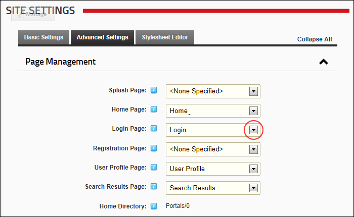

How to set any page as the Login page for the site. This setting enables you to create a custom Login page rather than using the default login page which only displays the Account Login module. If a Login page is not set, the default Login page is used. The default login page requires the Login skin object to be included in the skin.
Warning: Do not apply this setting without first adding an Account Login module to the page you are selecting and ensure the page is available to All Users. If you have logged out of the site and do not have an Account login module viewable by 'All Users' you will be unable to log in again. If this occurs, enter your site URL into the address bar of your Web browser and add "login.aspx" to the end of the URL. E.g. http://www.awesomecycles.biz/Login.aspx. This will display the default login page.
